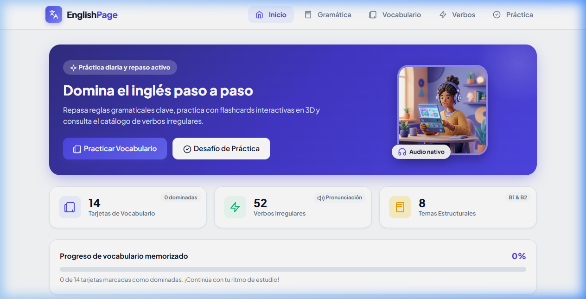
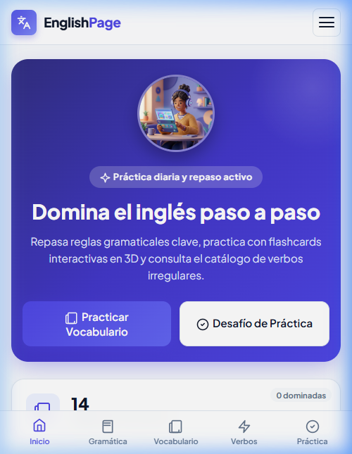
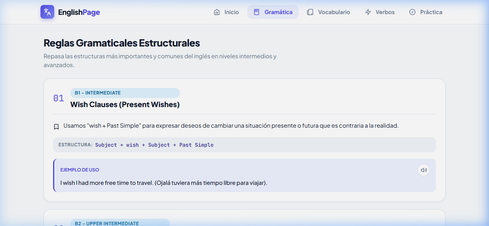
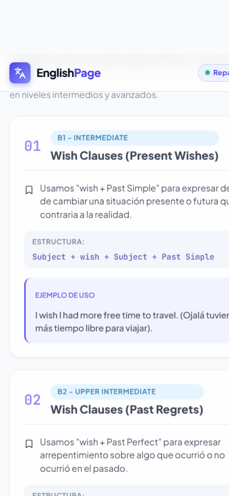
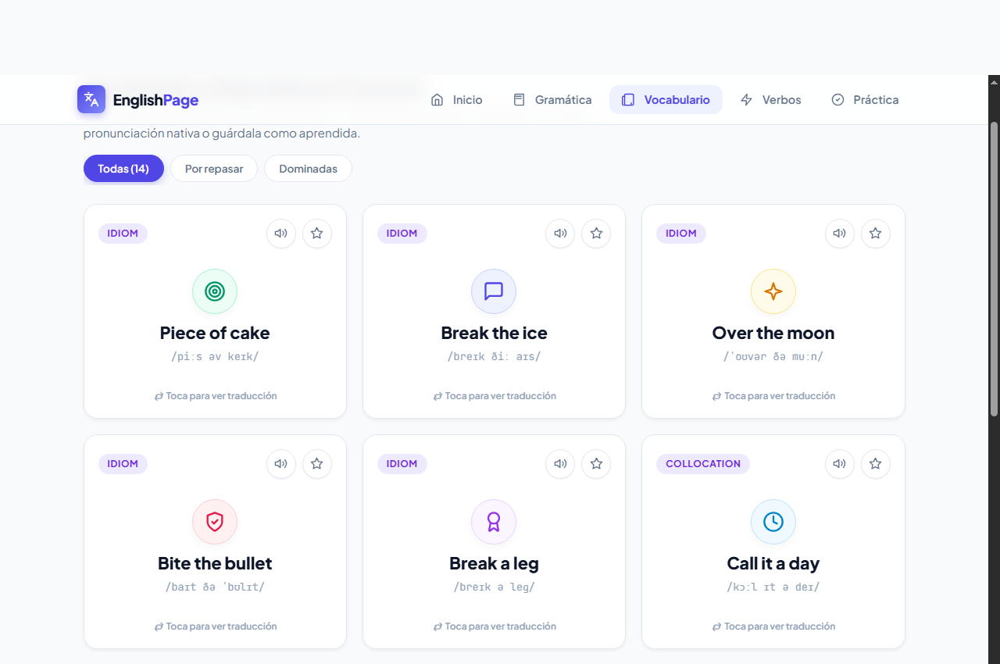
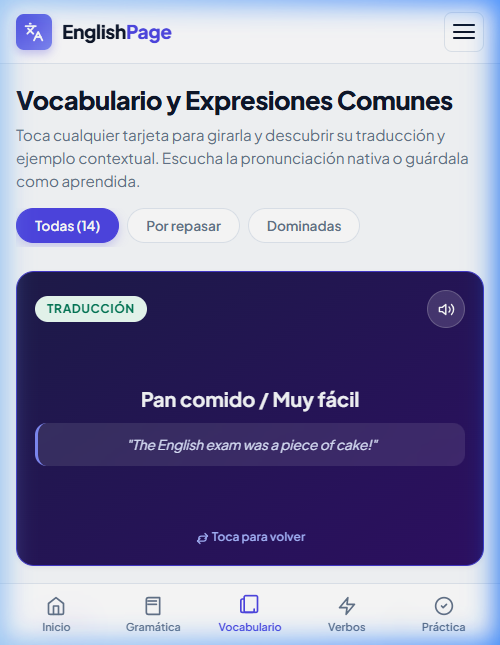
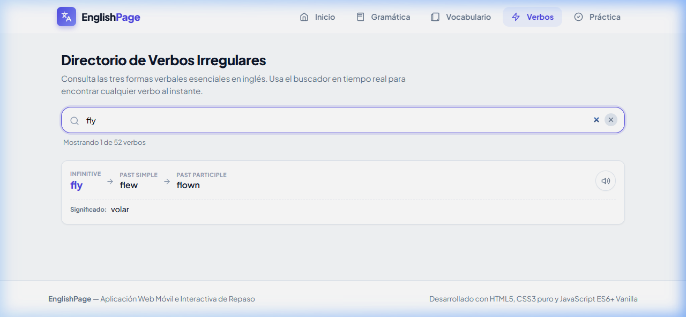
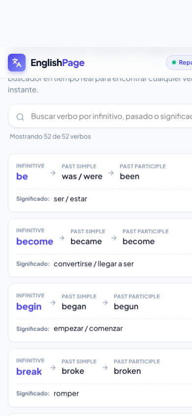
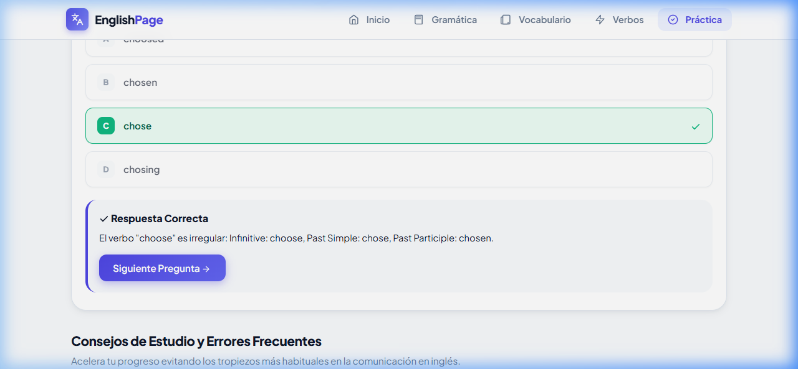
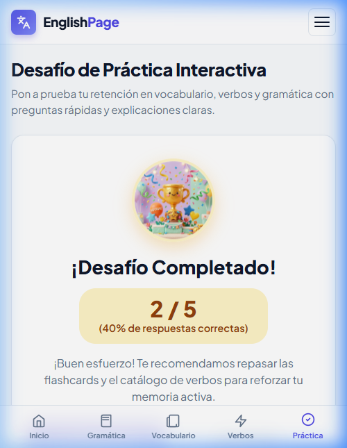

El aprendizaje de segundas lenguas requiere de retroalimentación inmediata, consistencia en la práctica y accesibilidad desde cualquier dispositivo móvil o de escritorio. En el marco del curso Plataformas Emergentes, este proyecto aborda la necesidad de construir una solución moderna orientada a teléfonos inteligentes que no dependa de frameworks monolíticos pesados, garantizando tiempos de carga casi instantáneos, bajo consumo de batería y memoria, y máxima adaptabilidad responsive.
Diseñar, desarrollar y desplegar una aplicación web local responsive orientada a dispositivos móviles para el repaso dinámico de gramática, vocabulario idiomático y verbos irregulares en inglés, aplicando patrones de arquitectura Single Page Application (SPA), persistencia local en el navegador y microinteracciones táctiles nativas.
La aplicación fue construida respetando estrictamente las pautas de tecnologías estándar web sin incorporar frameworks pesados que desnaturalicen la enseñanza de los fundamentos de plataformas emergentes:
| Tecnología | Versión / Estándar | Rol en la Solución | Justificación Técnica |
|---|---|---|---|
| HTML5 | Semántico W3C | Estructura de la SPA | Uso de etiquetas semánticas (header, main, nav, section), atributos de accesibilidad ARIA y metatags para compatibilidad con Web Apps móviles (viewport-fit=cover). |
| CSS3 Puro | CSS Moderno (Variables, Flexbox, Grid) | Estilos y Animaciones 3D | Cero dependencias externas (sin Tailwind ni Bootstrap). Uso de variables CSS para consistencia de temas, perspective y transform: rotateY(180deg) acelerados por GPU, y Media Queries fluidas. |
| JavaScript | ES6+ Vanilla Modular | Lógica de Negocio y DOM | Separación en módulos (import/export), controladores de eventos delegados, Web Speech API nativa para pronunciación en inglés, y persistencia local sin servidor (localStorage). |
| Vite | v5.4.x | Entorno de Desarrollo y Build | Servidor de desarrollo ultrarrápido con Hot Module Replacement (HMR) nativo mediante módulos ES y empaquetado optimizado para producción. |
| Git & GitHub | Control de Versiones | Repositorio y Gestión | Control de versiones granular, historial de commits descriptivo y publicación pública del proyecto. |
El proyecto adopta el patrón de Separación de Responsabilidades (SoC), aislando datos, renderizado, almacenamiento y navegación:
englishPage/
├── index.html # Contenedor raíz SPA con las 5 secciones declarativas
├── package.json # Metadatos del proyecto y comandos (dev, build, preview)
├── vite.config.js # Configuración del servidor y puertos locales
├── README.md # Manual de instalación y documentación técnica sin emojis
├── docs/ # Documentación académica, capturas de pantalla e informe
│ ├── informe.html # Documento fuente del informe imprimible
│ └── screenshots/ # Galería de capturas en móvil y escritorio
└── src/
├── css/
│ ├── variables.css # Paletas de color HSL, radios de borde y tokens
│ ├── base.css # Reseteo responsivo, tipografía y utilidades
│ ├── layout.css # Header fijo, navegación superior y barra táctil móvil
│ ├── cards.css # Flashcards 3D, badges SVG, reglas y tablas
│ └── main.css # Agregador central de hojas de estilo
└── js/
├── data.js # Datos puros de reglas, 14 tarjetas y catálogo de verbos
├── icons.js # Librería de íconos vectoriales SVG limpios (sin emojis)
├── speech.js # Motor de síntesis de voz nativo en inglés (Web Speech API)
├── storage.js # API de persistencia en localStorage para tarjetas aprendidas
├── navigation.js # Enrutador SPA reactivo al evento 'hashchange'
├── render.js # Inyectores dinámicos del DOM para cada sección
└── main.js # Punto de entrada y ciclo de vida de la aplicación
En dispositivos móviles con pantallas superiores a 6 pulgadas, la navegación en la parte superior genera fatiga muscular. Por ello, la aplicación implementa una barra de navegación inferior fija (.mobile-bottom-nav) que ubica los 5 accesos directos al alcance inmediato del pulgar con áreas táctiles mínimas de 48x48 píxeles. En resoluciones superiores a 768px (computadoras y tabletas apaisadas), esta barra se oculta fluidamente y se activa la barra superior tradicional (.desktop-nav).
Para evitar el aspecto genérico y artificial que transmiten los emojis convencionales, se desarrolló una librería propia de íconos vectoriales SVG en icons.js. Cada ícono representa la interpretación figurativa real de la expresión idiomática (por ejemplo, una diana para Piece of cake indicando precisión y facilidad; un candado abierto para Spill the beans indicando revelar un secreto).
Las tarjetas de vocabulario emplean CSS 3D (transform-style: preserve-3d, perspective: 1000px y backface-visibility: hidden). Esto delega el procesamiento del volteo a la GPU del teléfono móvil, manteniendo una tasa constante de 60 cuadros por segundo (FPS) sin ralentizaciones.
Presenta un panel de control interactivo con estadísticas de estudio en tiempo real (porcentaje de dominio de tarjetas, total de verbos y reglas), además de un banner de desafío diario con acceso directo al Quiz interactivo.

Versión de Escritorio (Desktop 1280px)
Versión Móvil (Smartphone 390px)Organiza los tiempos y reglas gramaticales esenciales (Present Simple, Past Simple, Present Perfect, First Conditional) mediante tarjetas con etiquetas semánticas, fórmulas estructuradas, ejemplos bilingües y botones interactivos de audio nativo.

Vista en Escritorio - Fórmulas y Ejemplos
Vista Móvil - Lectura Vertical CómodaCompuesta por 14 tarjetas tridimensionales interactivas que contienen expresiones idiomáticas. Cada tarjeta incluye una insignia conceptual SVG, botón de pronunciación nativa en inglés y botón de guardado como aprendida con sincronización en localStorage. Al tocar la tarjeta, gira 180° mostrando su traducción y oración de contexto.

Vista en Escritorio - Grid Multicolumna con Íconos Conceptuales
Vista Móvil - Giro 3D Mostrando TraducciónCatálogo completo de verbos irregulares con sus tres formas verbales fundamentales (Infinitive, Past Simple, Past Participle) y traducción. Integra un motor de filtrado instantáneo que busca en tiempo real en inglés y español conforme el usuario escribe.

Filtrado en Tiempo Real ("fly" - flew, flown)
Vista Táctil Móvil con PronunciaciónMódulo de evaluación formativa con temporizador, barra de progreso porcentual, retroalimentación pedagógica instantánea (explicación de aciertos y errores) y pantalla final con cálculo de porcentaje y recomendación de estudio.

Pregunta Activa y Explicación en Tiempo Real
Pantalla de Resultados y Diagnóstico Móvil| Requerimiento General | Estado | Detalle de Implementación en la Solución |
|---|---|---|
| Tema Libre | Cumplido | Plataforma educativa interactiva bilingüe para el estudio del idioma inglés (EnglishPage). |
| Interfaz Adaptada a Móviles | Cumplido | Diseño mobile-first con navegación táctil inferior (Thumb Zone), target size de botones de 48px, soporte de safe areas y sin desbordamientos horizontales. |
| Al menos 5 Vistas / Secciones | Cumplido | 5 secciones implementadas en arquitectura SPA: 1) Inicio, 2) Gramática, 3) Vocabulario, 4) Verbos Irregulares y 5) Práctica (Quiz Interactivo). |
| JavaScript Dinámico | Cumplido | Renderizado reactivo del DOM (render.js), motor de búsqueda en tiempo real, síntesis de voz en inglés (speech.js), estado del quiz con temporizador y persistencia en localStorage. |
| Resultados en Tarjetas o Listas | Cumplido | Flashcards 3D de vocabulario, acordeón de tarjetas gramaticales, directorio de verbos con tarjetas móviles y tabla de escritorio, y tarjetas interactivas de quiz. |
| Responsive Celular y Computadora | Cumplido | Media queries con puntos de ruptura en 480px, 768px y 1024px. Transición fluida entre navegación inferior en teléfonos y barra superior fija en computadoras. |
| Repositorio en GitHub | Cumplido | Código fuente versionado y publicado en: https://github.com/JoseGordilloMendoza/englishPage.git |
npm install seguido de npm run dev. Todas las vistas e interacciones operan localmente sin dependencias externas obligatorias.